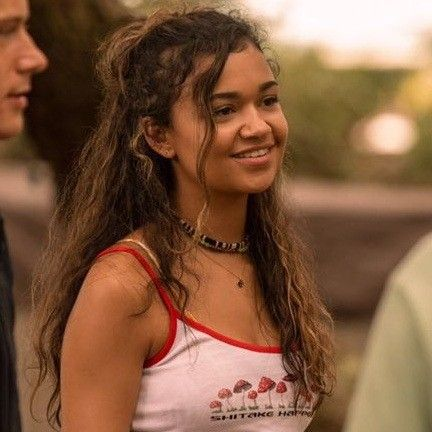
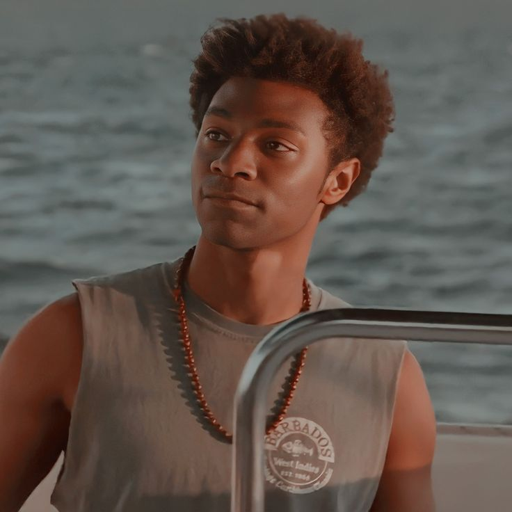
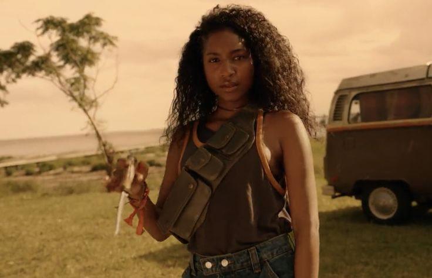
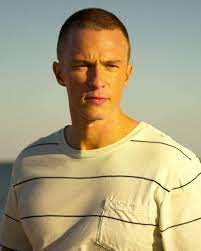

John B is the leader of the Pogues, searching for answers about his father’s disappearance.
John B’s best friend, a reckless but loyal Pogue with a troubled home life.
A Kook who becomes John B’s love interest, bridging the gap between the two social classes.
A Pogue with a Kook background, fiercely loyal to her friends.
The brainy and cautious member of the Pogues.
A fierce and loyal ally to the Pogues.
Sarah’s volatile and dangerous older brother.
Sarah and Rafe’s manipulative, wealthy father with dark secrets.